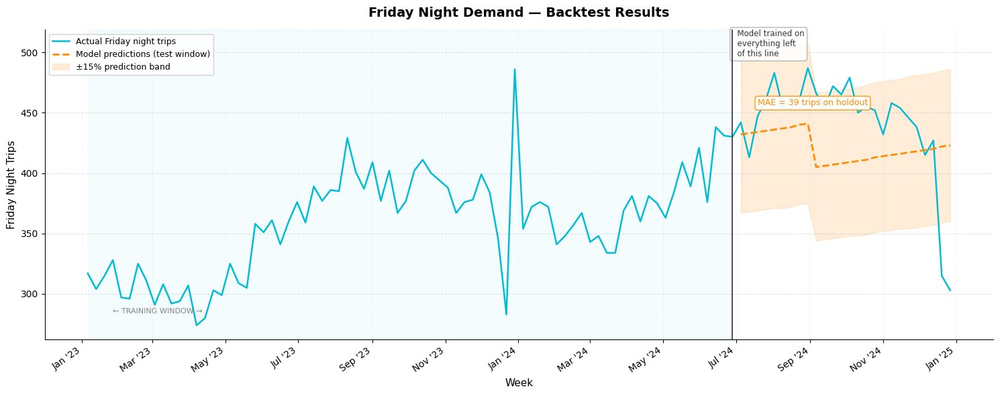

Everything runs on the forecast
Uber doesn't own cars or employ drivers — it runs a real-time marketplace where riders who need a trip in the next two minutes need to find a driver who is already nearby and logged in. If Uber underestimates Friday-night demand, riders wait twenty minutes and eventually delete the app; if it overestimates, drivers sit idle and earn nothing, which means they stop turning on the app. Demand forecasting is how Uber solves this before it happens: by predicting exactly how many trips will be requested on a given night in a given neighborhood, Uber can alert the right number of drivers to be online, pre-position them near high-demand areas, and decide whether to raise prices to attract more supply — all automatically, at scale, hours before a single rider opens the app.
near WWU campus
(6-month holdout)
at 10pm concert exit
without surge pricing
Training on two years of Bellingham Fridays
I pulled two years of historical Friday night trip data centered on the WWU campus area in Bellingham, then decomposed it into its underlying signals: a slow upward trend as Uber's local market grew, and clear seasonal patterns — summers quieter, school-year weeks busier, New Year's Eve a sharp outlier. I used those four features (week number, is_summer, is_school_year, is_nye) to train a linear regression model on the first 78 weeks of data, then validated it on the final 26-week holdout to measure honest, out-of-sample error before using it to predict anything real.

The dashed line is what the model predicted. The solid line is what actually happened. The gap between them is the model's error — and the honest measure of how much to trust it.
From model output to operations memo
Here is the actual operations recommendation the model produced for the Death Cab for Cutie, Sleater-Kinney, and ODESZA homecoming concert at WWU.
How fragile is the recommendation?
Before sending that memo, I stress-tested the key assumptions to understand how fragile the recommendation was.
No changes flipped it. Changing the Assumption slider had the biggest impact but still didn't flip the recommendation of price surge being active. This shows that the lack of drivers could be a risk, leading to late delays for most of the riders.
Stress-testing means deliberately breaking your own assumptions — pushing the trips-per-driver rate lower, shrinking the demand estimate, widening the uncertainty band — and checking whether the core recommendation changes. When no plausible combination of adjustments flips the conclusion, you have real confidence that the memo is defensible, not just a function of cherry-picked inputs. A recommendation that survives adversarial assumptions is one you can actually stand behind in a meeting.
The gap between prediction and decision
In a real Uber deployment, the model's output doesn't land in a human inbox — it feeds directly into the pricing algorithm, which reads the predicted demand number and sets the surge multiplier automatically, with no human review between forecast and price. When the model is right, this is exactly what you want: fast, consistent, city-scale decisions made in milliseconds. When the model is wrong — say, an earthquake has just closed every highway into downtown and demand spikes for reasons the model has never seen — the algorithm still fires, surge pricing still activates, and people trying to evacuate face 4× fares while no one at Uber has yet noticed the signal is broken.
The prediction-decision gap is where AI risk actually lives. The model's error is just a number. The algorithm's response to that error — and the absence of a human circuit-breaker — is what determines real-world harm.
Distribution shift in Bellingham
Six weeks after the concert, the world the model was trained on quietly ceased to exist: WWU enrollment dropped, new apartment density shifted rider geography toward Cordata, and Lyft entered the Bellingham market for the first time — and the model had no idea any of it happened. It kept predicting 400-plus trips on school-year Fridays because that's what the data said, but the actual market had restructured around it. Drivers earned less per shift than the model-informed incentives promised, riders found themselves waiting longer than Uber's app predicted, and some quietly switched apps — not because anything visibly broke, but because nobody had set up a system to tell the model the world had changed.
What I actually learned building this
What you decide early on, like focusing on the school-year effect, basically shapes everything the model does later. Those predictions get tested and adjusted, and eventually they affect real decisions like how many drivers are out and whether surge pricing is turned on. If the early assumptions are off, that error persists and can lead to too many or too few drivers, meaning higher prices for riders or less money for drivers weeks later. And if the system is not monitored well or people lose trust in it, those problems can keep getting worse.
If I were building this forecasting system for a real Bellingham business, I would add real-time tracking for concerts or campus events, so the model can adjust to sudden spikes in demand.
Built as part of MIS 432: AI in Business at Western Washington University. All predictions, feature engineering, and the operations memo above reflect original work completed in this course.